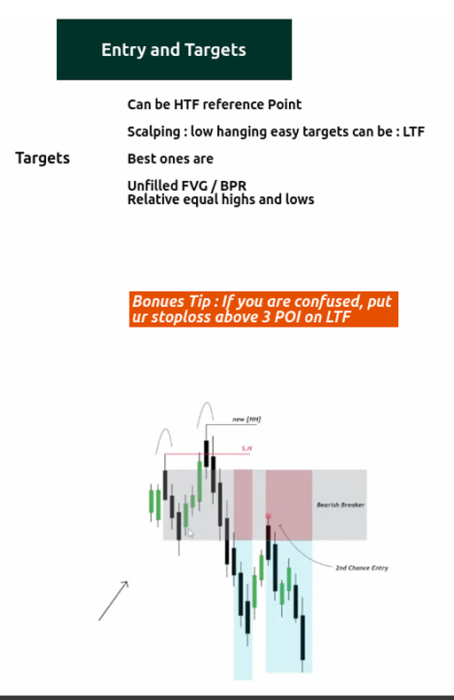
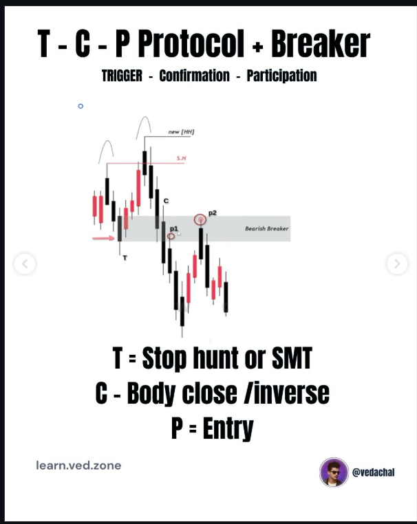

Before you learn how to enter the market, you must understand where the market algorithms are drawing price towards. This module covers High Timeframe (HTF) reference points, targeting liquidity, and executing entries using the TCP Protocol.
Trading isn't about guessing direction. It's about letting price tap into High Timeframe institutional points of interest, and identifying the precise "draw on liquidity."
Bonus Tip
If you are ever confused during execution, place your stoploss strictly above 3 Points of Interest (POI) on the Lower Time Frame to avoid being swept by noise.


An algorithmic approach to entering the market safely after a massive sweep in liquidity. Never jump the gun. Wait for the mechanical confirmation.
The first stage is waiting for retail stops to be taken out. Look for a liquidity sweep or an SMT Divergence to ignite the algorithm.
Displacement is key. We wait for a strong candle body close below the prior low (or inverse). This validates that the smart money has shifted direction.
Once T and C are fulfilled, we participate on the retracement into the newly established Bearish/Bullish Breaker or FVG.